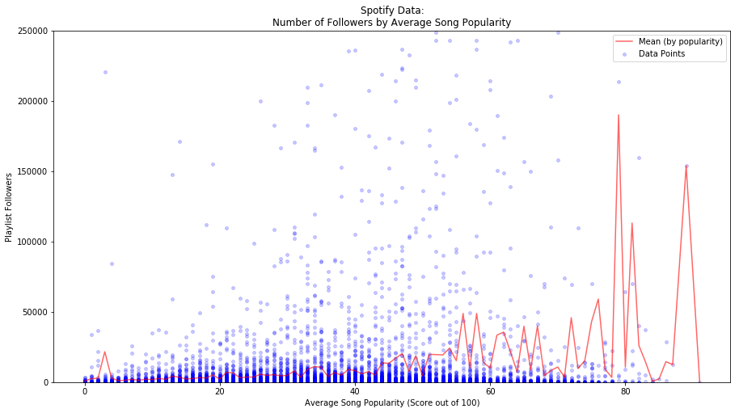
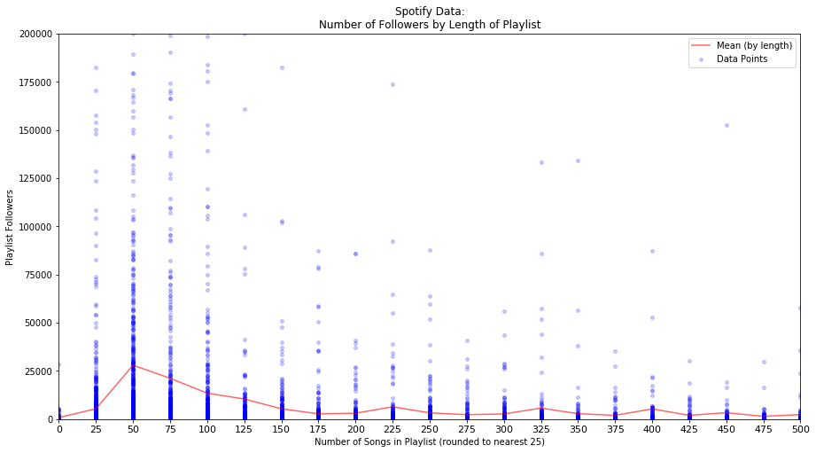
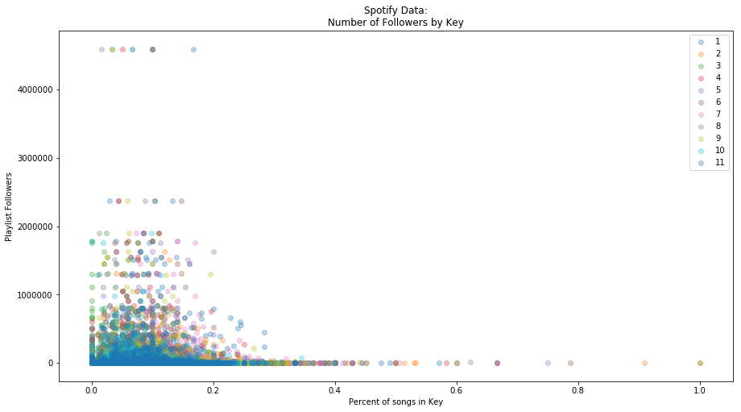
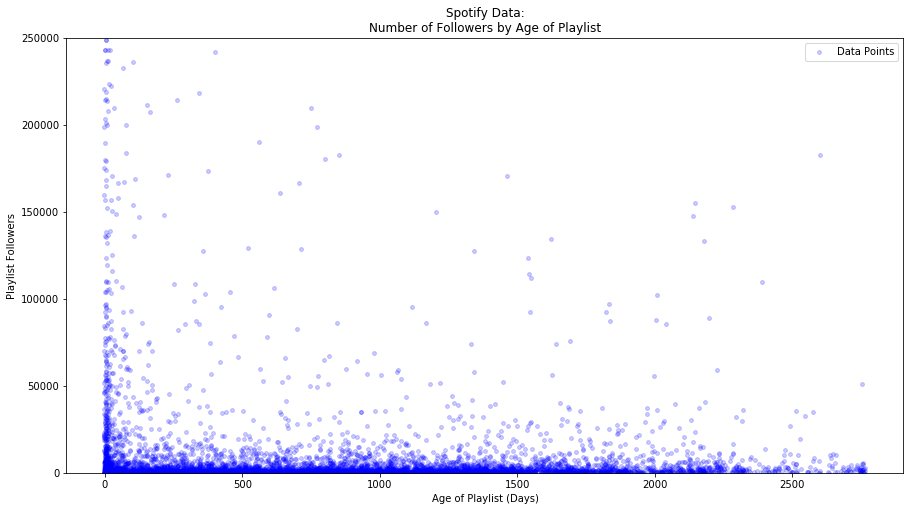
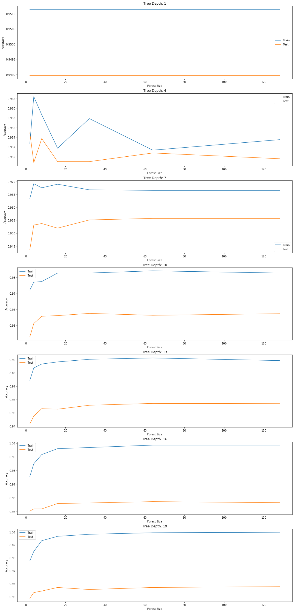

NOTEBOOKS:
SPOTIFY DATA | MSD DATA | EDA, MODEL, & RESULTS
MOTIVATION
Our goal was to come up with a model for generating playlists that will maximize the likelihood of obtaining a significant number of followers for the most common user-specified genres or search filters.
Our final deliverable to Spotify is a set of playlists that are most likely to be highly successful. These playlists are based around artist genre (as we did not have data on song genre).
DATA
Our initial data was obtained by requesting playlist information through the Spotify API, which provided information about artist and song popularities, as well as additional track characteristics, including tempo, key, and loudness. We investigated other potential predictors from the Million Songs Database developed by LabROSA at Columbia University, using the song title and album (this dataset unfortunately was missing ISRC). We did not take many features from this MSD dataset. This is partially because we did not think that too many of them would be useful (and due to time limitations). This is more or less what the data looked like:
| followers | pl_length | pl_name | track_album_name | track_name | track_populatrity | track_acousticness | track_danceability | track_energy | track_key | |
|---|---|---|---|---|---|---|---|---|---|---|
| 1559039 | 4594125 | 60 | mint | Off The Deep End Volume One | Ghost | 60 | 0.101000 | 0.530 | 0.634 | 5.0 |
| 893872 | 4594125 | 60 | mint | Without You (Remixes) | Without You - Otto Knows Remix | 51 | 0.000738 | 0.531 | 0.850 | 2.0 |
| 334899 | 4594125 | 60 | mint | Message In A Bottle | Message In A Bottle | 52 | 0.015700 | 0.543 | 0.939 | 1.0 |
| 65251 | 4594125 | 60 | mint | Almost Home | Almost Home | 63 | 0.037600 | 0.780 | 0.722 | 0.0 |
| 1198752 | 4594125 | 60 | mint | Nobody Compares To You | Nobody Compares To You | 71 | 0.229000 | 0.596 | 0.731 | 2.0 |
Each row is a song. This table shows some of the fields that we had in our dataset. We collapsed the songs into their respective playlists in our to build our model and make our predictions.
Part of Spotify’s edge in the competitive streaming-audio industry (as it quickly expands into other verticals such as video-streams and recording) is the ease-of-use of its platform: music is curated and presented to minimize effort needed to find tracks you like. The Discover Weekly playlist, for example, is an translation of a user’s hebdomadal listening history into a new set of tracks delivered to him or her each Monday. Developing a product that responds accurately to a user’s request is paramount to continued growth and success of the platform. It also helps innovators in the music industry understand how users react to a specific implementation of a curative algorithm;
There are two main obstacles to solving this problem, the latter much more abstract than the former. First, we needed to determine which predictors of the Spotify-generated data were most important in determining how many followers a playlist would accumulate. Our analysis of this took a potentially dangerous amount of our time and effort, as it resulted in a number of time-intensive attempts. Second, we needed to find a way to understand user-specified input to build a playlist that matched the request: parsing out genres attributed to each track, understanding which song characteristics perform better by genre, and ensuring overall playlist coherence/consistency.
Here are some examples of our EDA:     MODELING Our baseline models are two linear regressions, one featuring all predictors and the other using a Lasso feature reduction method. However, we quickly realized that our model had very little predictive power. Instead, we decided to continue by trying to classify playlists as either successful or not successful. This seemed like a good approach because we can now give decent predictions about whether or not a playlist will be popular or not instead of giving estimates of followers with huge errors. We began by creating a threshold of success for a playlist in terms of the number of followers. We set this threshold so that it would place a playlist in the top 20% most popular on Spotify (of the playlists we got from the API). With this threshold we then implemented a random forest classifier that returned a probability of the playlist hitting this threshold of followers. In other words we are generating a probability that the playlist is successful, and we use that probability to select which playlist to suggest to Spotify and/or the user.  RESULTS, CONCLUSIONS, & FUTURE WORK Our results for Spotify are the playlists that we recommend for each genre. Here is an example of the playlist that we generated for the genre “Indie:” We put this together by randomly selecting indie songs and putting them into playlists. We only kept the playlist with the highest probability of success. There are a couple of downsides with our current system. First, it uses artist genre and there are often many genres associated with each artist. This might not give a great representation of the desired genre. Second, this model still has a hard time classifying anything as success. After hundreds of iterations, the most likely success only had a 45% chance of success. While this is much better than most playlists will do (remember, only 20% of the original playlists are classified as success), this is still probably not as strong as we would like. We think that this model would likely become stronger with more predictors or a larger subset of playlists. For predicting followers, there are likely many complex features that include what becomes a success, including how they show up in Spotify’s search results (though causality could go in both directions). Future work would involve getting many more features and building a stronger model. However, we think our basic framework is a good way to attack the problem and believe that we could provide useful feedback to Spotify given the time to build out a stronger classifier.
track_name
track_album_name
track_artists_name1
track_artists_name2
1112
end
end
Jeremy Zucker
NaN
11543
Bad Girls - Switch Remix
Bad Girls (The Remixes)
M.I.A.
Missy Elliott
11920
From Nowhere
Sweet Disarray
Dan Croll
NaN
11956
Blue Clouds
Monkeytown
Modeselektor
NaN
14483
Voyeur
Overgrown
James Blake
NaN
17793
We're Going To Be Friends
White Blood Cells
The White Stripes
NaN
23713
What Could You Do
What Could You Do
Dolorean
NaN
26841
Everything Now
Everything Now
Arcade Fire
NaN
28401
Offering
Offering
Cults
NaN
30064
Remind Me - Radio Edit
Melody AM
Röyksopp
NaN
31164
Circle
Triangle
Slow Magic
NaN
33177
Promise
Every Kingdom
Ben Howard
NaN
36596
Here Tonight
Where to Run
Sam Burchfield
NaN
39936
You Playin' (This Could Be Us) [feat. The Game...
You Playin' (This Could Be Us) [feat. The Game...
Jae Murphy
The Game
45721
In A Drawer
Why Are You OK
Band of Horses
NaN
48183
Not Going Home
Not Going Home
Great Good Fine Ok
NaN
49178
Power
Power
Ó
NaN
50025
Look Out
Look Out
Bad Wave
NaN
54388
Immeasurably More
The Art of Celebration
Rend Collective
NaN
58561
Do You Remember
Do You Remember
Jarryd James
NaN
59893
Cleaning House
Infinite Worlds
Vagabon
NaN
70676
Gubben i lådan
Gubben i lådan
Daniel Adams-Ray
NaN
75797
Baby Blue
American English
Tor Miller
NaN
76577
About Us
ODE
JOY.
NaN
77329
Rescue Song - RAC Remix
Rescue Song
Mr Little Jeans
NaN
78792
Everyone Is Gonna Love Me Now
Lights Out (Deluxe Edition)
Ingrid Michaelson
NaN
80267
Hello - Radio Edit
Hello
Martin Solveig
Dragonette
82437
My Boo
Confessions
Usher
Alicia Keys
92700
You Don't Know Me
You Don't Know Me
Jax Jones
RAYE
97774
Shinin
Shinin
Lindstrøm
Grace Hall
...
...
...
...
...
163725
Turn (Instrumental Version)
Awakened to the Sound (Instrumental Version)
Future Of Forestry
NaN
167174
Videotape
In Rainbows
Radiohead
NaN
171947
Body
Body
Dreezy
Jeremih
172448
Pieces (Live)
Have It All (Live)
Steffany Gretzinger
Bethel Music
174133
Eternity
Come Alive
Rachel Taylor
NaN
176468
Slow Motion
Trigga Reloaded
Trey Songz
NaN
185046
Myenemy
Myenemy
Parcels
NaN
185282
I Know
Dark Sky Paradise
Big Sean
Jhene Aiko
188076
Full Moon
With Light and with Love
Woods
NaN
192583
John's Star
The National
The National
NaN
198435
Down On Me
All About You (Deluxe Edition)
Jeremih
50 Cent
202977
Thunder
Thunder
Imagine Dragons
NaN
206615
Vibe
The Water[s]
Mick Jenkins
NaN
210461
Distraction
SweetSexySavage (Deluxe)
Kehlani
NaN
212001
Pieces (Hushed)
Black Bear (Hushed)
Andrew Belle
NaN
213868
No Longer Slaves (Radio Version) [feat. Jonath...
No Longer Slaves (Radio Version) [feat. Jonath...
Bethel Music
Jonathan David Helser
215115
Moments Passed
Moments Passed
Dermot Kennedy
NaN
219486
Bloom
In Return
ODESZA
NaN
224921
Recognize (feat. Drake)
PARTYNEXTDOOR TWO
PARTYNEXTDOOR
Drake
236641
Crossfire
Crossfire
Stephen
NaN
241237
Let Her Go
All The Little Lights
Passenger
NaN
244466
Doubt (Summer Edit)
Doubt (Summer Edit)
Shallou
NaN
260407
Chasing Cars
Eyes Open
Snow Patrol
NaN
263225
Either Way - Maleek Berry Remix
Either Way (Maleek Berry Remix)
Snakehips
Anne-Marie
266976
Feel It Still
Feel It Still
Portugal. The Man
NaN
269837
Stay With You
Stay With You
Cheat Codes
CADE
270434
Burn Break Crash
Burn Break Crash
Aanysa
Snakehips
283399
Pretty Girl Rock
No Boys Allowed (Deluxe)
Keri Hilson
NaN
284507
Best Day Of My Life
Oh, What A Life
American Authors
NaN
288080
Preach
If You're Reading This It's Too Late
Drake
PARTYNEXTDOOR